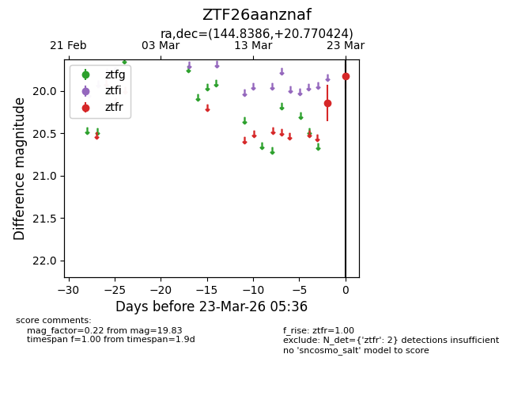
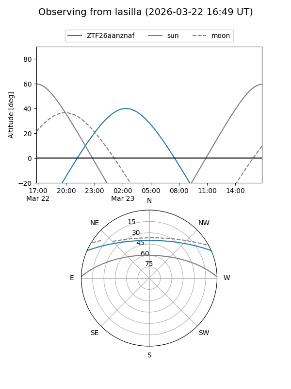
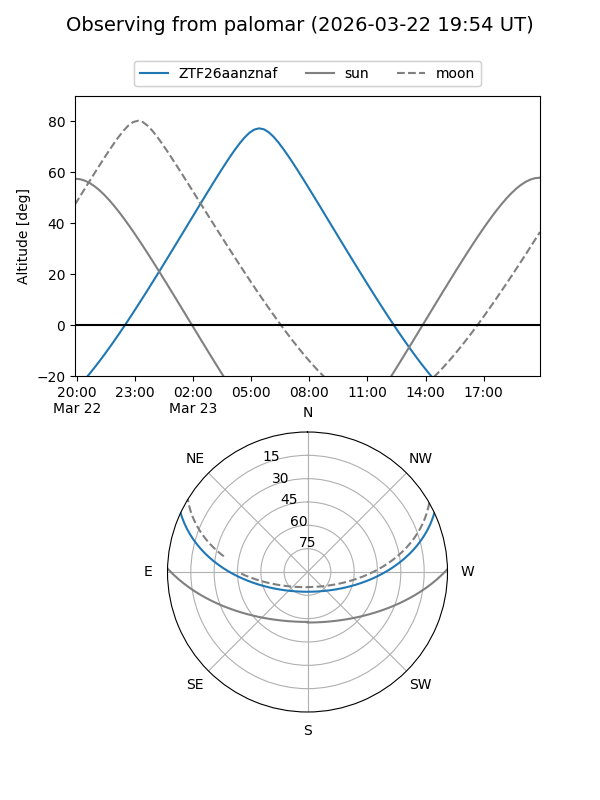

ZTF26aanznaf
Target ZTF26aanznaf at 2026-03-23 05:38
Aliases and brokers:
FINK: link
Lasair: link
ALeRCE: link
alt names
ZTF26aanznaf (ztf,fink_ztf)
Coordinates:
equatorial (ra, dec) = 144.8386,+20.77042
equatorial (HMS+DMS) = 09:39:21.27,+20:46:13.53
galactic (l, b) = (210.4240,+45.91371)
Flags:
Photometry:
last ztfr=19.83
2 ztfr detections
Lightcurve

Visibility


Additional plots